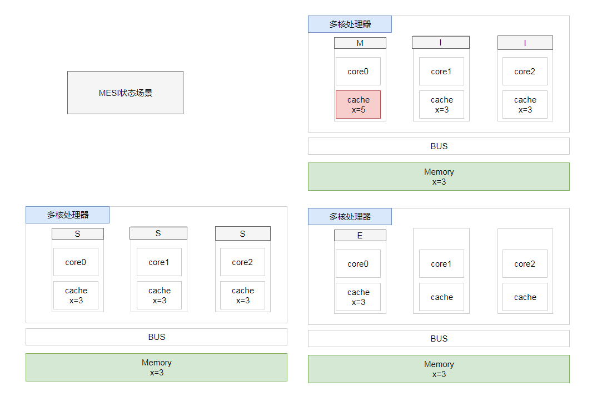
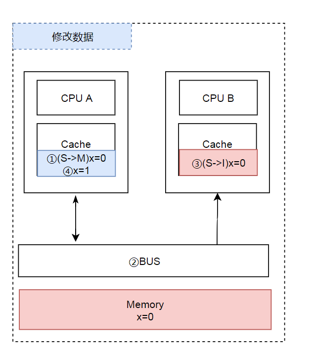
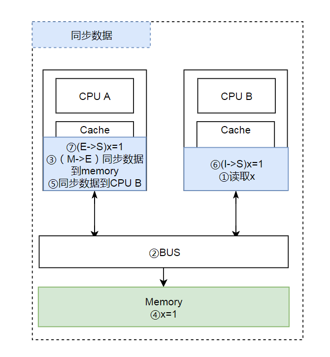

写在前面
处理器上有一套完整的协议，来保证Cache一致性。比较经典的Cache一致性协议当属MESI协议，奔腾处理器有使用它，很多其他的处理器都是使用它的变种。
单核Cache中每个Cache line有2个标志：dirty和valid标志，它们很好的描述了Cache和Memory(内存)之间的数据关系(数据是否有效，数据是否被修改)，而在多核处理器中，多个核会共享一些数据，MESI协议就包含了描述共享的状态。
在MESI协议中，每个Cache line有4个状态，可用2个bit表示，它们分别是：
|
状态 |
描述 |
|
M(Modified) |
这行数据有效，数据被修改了，和内存中的数据不一致，数据只存在于本Cache中。 |
|
E(Exclusive) |
这行数据有效，数据和内存中的数据一致，数据只存在于本Cache中。 |
|
S(Shared) |
这行数据有效，数据和内存中的数据一致，数据存在于很多Cache中。 |
|
I(Invalid) |
这行数据无效。 |
MESI状态场景 
修改数据
那么执行流程是： CPU A 计算完成后发指令需要修改x. CPU A 将x设置为M状态（修改）并通知缓存了x的CPU B, CPU B将本地cache b中的x设置为I状态(无效) CPU A 对x进行赋值。

同步数据
CPU B 发出了要读取x的指令。 CPU B 通知CPU A,CPU A将修改后的数据同步到主内存时cache a 修改为E（独享） CPU A同步数据到CPU B的x,将cache a和同步后cache b中的x设置为S状态（共享）。

MESI优化和引入的问题
缓存的一致性消息传递是要时间的，这就使其切换时会产生延迟。当一个缓存被切换状态时其他缓存收到消息完成各自的切换并且发出回应消息这么一长串的时间中CPU都会等待所有缓存响应完成。可能出现的阻塞都会导致各种各样的性能问题和稳定性问题。
Store Bufferes
为了避免这种CPU运算能力的浪费，Store Bufferes被引入使用。处理器把它想要写入到主存的值写到缓存，然后继续去处理其他事情。当所有失效确认（Invalidate Acknowledge）都接收到时，数据才会最终被提交。 这么做有两个风险
Store Bufferes的风险
第一、就是处理器会尝试从存储缓存（Store buffer）中读取值，但它还没有进行提交。这个的解决方案称为Store Forwarding，它使得加载的时候，如果存储缓存中存在，则进行返回。 第二、保存什么时候会完成，这个并没有任何保证。
|
|
试想一下开始执行时，CPU A保存着finished在E(独享)状态，而value并没有保存在它的缓存中。（例如，Invalid）。在这种情况下，value会比finished更迟地抛弃存储缓存。完全有可能CPU B读取finished的值为true，而value的值不等于10。
即isFinsh的赋值在value赋值之前。
这种在可识别的行为中发生的变化称为重排序（reordings）。注意，这不意味着你的指令的位置被恶意（或者好意）地更改。
它只是意味着其他的CPU会读到跟程序中写入的顺序不一样的结果。
硬件内存模型
执行失效也不是一个简单的操作，它需要处理器去处理。另外，存储缓存（Store Buffers）并不是无穷大的，所以处理器有时需要等待失效确认的返回。这两个操作都会使得性能大幅降低。为了应付这种情况，引入了失效队列。它们的约定如下：
- 对于所有的收到的Invalidate请求，Invalidate Acknowlege消息必须立刻发送
- Invalidate并不真正执行，而是被放在一个特殊的队列中，在方便的时候才会去执行。
- 处理器不会发送任何消息给所处理的缓存条目，直到它处理Invalidate。
即便是这样处理器已然不知道什么时候优化是允许的，而什么时候并不允许。 干脆处理器将这个任务丢给了写代码的人。这就是内存屏障（Memory Barriers）。
写屏障Store Memory Barrier(a.k.a. ST, SMB, smp_wmb)是一条告诉处理器在执行这之后的指令之前，应用所有已经在存储缓存（store buffer）中的保存的指令。
读屏障Load Memory Barrier (a.k.a. LD, RMB, smp_rmb)是一条告诉处理器在执行任何的加载前，先应用所有已经在失效队列中的失效操作的指令。
|
|
现在确实安全了。完美无暇！
后记
然而，对于程序员来说简直是一个灾难。不想和平台耦合我们要跨平台。Write One,Run Everywhere! 幸好java解决了这个问题，至于如何解决的请关注JMM(JavaMemoryMode)与物理内存相爱相杀。